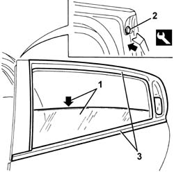

7010D18 rear side door descending window glass channel r r
- Path
- Procedures > 70 FITTINGS > 7010 PASSENGER COMPARTMENT REAR SIDE DOORS > 7010D rear side door window glasses > 7010D18 rear side door descending window glass channel r r
- Kind
- repair procedure (removal / refitting; the operation number is the code)
- Applies to
- all engines; all production periods
- Interactive page
- https://sloeber94.github.io/elrnDB-a147/en/#/3025714
Applies to: all engines; all production periods
 Removing
Removing
 Refitting
Refitting7010C11 rear side door outside handle-r r
7010D33 channel of door descending glass inner guide (one) lh or rh, of rear side door - r r
1. Lower the window to the limit of its travel.
2. Release the retaining button, using the special tool.
 | Name | Country |
|---|---|---|
2 | Scraper blade | 1.823.015.000 |
3. Remove the whole of the window channel.

Applies to: all engines; all production periods
Refitting
RemovingCheck that the channel is undamaged.
Fit the window channel.
Do up the retaining stud.
Raise the window.
7010D33 channel of door descending glass inner guide (one) lh or rh, of rear side door - r r
Topics linked from this page (2)
- 7010C11 rear side door outside handle-r r
- 7010D33 channel of door descending glass inner guide (one) lh or rh, of rear side door - r r